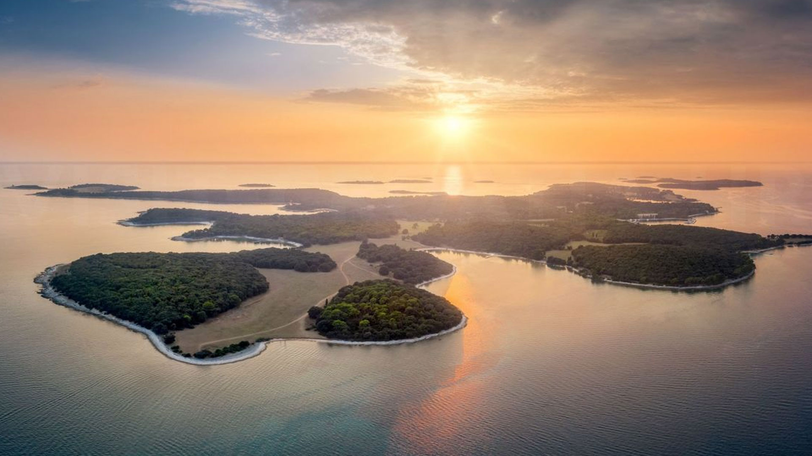
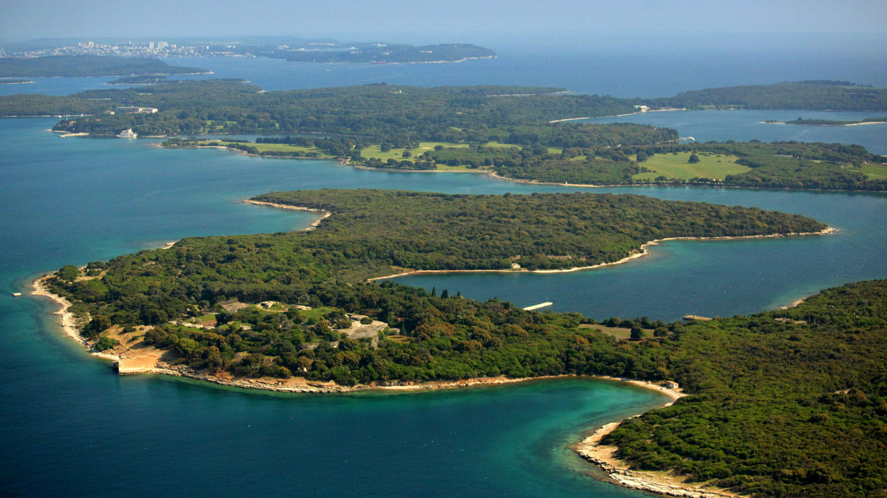

Brijuni




Nacionalni park Brijuni obuhvaća skupinu otoka uz zapadnu obalu Istre, gdje se mediteranski pejzaž spaja s bogatom poviješću i kulturnom baštinom. Brijuni nisu samo prirodni park, nego i mjesto slojevite prošlosti, gdje su se stoljećima isprepletali priroda, ljudi i različite kulture. Posjet ovim otocima donosi osjećaj mirnog, gotovo aristokratskog krajolika, u kojem se šetnice i livade otvaraju prema moru, a borove šume pružaju hladovinu i tišinu.
Glavni otok, Veliki Brijun, srce je parka i mjesto na kojem se nalazi većina posjetiteljskih sadržaja. Šetnja otokom otkriva pejzaže mediteranskih livada, maslinika i borovih šuma, ali i ostatke rimskih vila, mozaika i arheoloških lokaliteta. Ovdje je priroda oblikovana ljudskim prisustvom kroz stoljeća, ali bez narušavanja ravnoteže. Upravo taj spoj prirodne i kulturne baštine daje Brijunima jedinstven karakter.
Brijuni su poznati i po iznimnoj biološkoj raznolikosti. Na relativno malom prostoru razvijen je velik broj biljnih vrsta, zahvaljujući blagoj klimi i bogatom tlu. Mediteranske vrste poput lovora, ružmarina i mirte rastu uz egzotične biljke koje su tijekom povijesti unosili stanovnici i posjetitelji. Takva kombinacija stvara botanički vrt na otvorenom, u kojem se prirodni i kultivirani elementi međusobno nadopunjuju.
Životinjski svijet Brijuna obuhvaća brojne ptice, guštere, zečeve i druge manje sisavce, koji čine svakodnevnu sliku otoka. Posebnost parka je i safari-park, u kojem se nalaze životinje donesene kao darovi tijekom povijesti. Iako to nije tipičan dio prirodnog ekosustava, safari-park je postao dio identiteta Brijuna i često privlači posjetitelje koji žele vidjeti životinje izbliza. Ipak, glavni doživljaj ostaje priroda otoka i njegov mir.
Brijuni su poznati po čistom moru i uređenim uvalama, iako je kupanje i pristup određenim područjima reguliran radi zaštite prirode. Podmorje oko otoka čuva bogatstvo morskih vrsta, od riba do morskih cvjetova, a čistoća vode čini ovaj prostor vrijednim i s ekološke strane. Morski ekosustav dio je šire slike parka, jer Brijuni nisu samo kopno, već i morski prostor koji se proteže oko otoka.
Osim prirode, Brijuni su prepoznatljivi i po povijesnim događajima. Tijekom 20. stoljeća otoci su bili mjesto susreta i diplomacije, što je ostavilo trag u arhitekturi i kulturnim sadržajima. Na otoku se nalaze rezidencije, povijesne građevine i muzejski prostori koji govore o tom razdoblju. Posjetiteljima je dostupna i izložba koja prikazuje povijesni razvoj Brijuna, čime se prirodni doživljaj nadopunjuje kulturnim sadržajem.
Jedan od simbola Brijuna je njihova tišina i usporeni ritam. Otoci nisu pretrpani sadržajima, već pozivaju na laganu šetnju, promatranje prirode i uživanje u pejzažu. Biciklizam je popularan način obilaska, jer omogućuje da se u kratkom vremenu obiđe više dijelova otoka, ali uz zadržavanje osjećaja slobode i bliskosti s prirodom. Takav način kretanja posebno odgovara atmosferi Brijuna, gdje je naglasak na opuštanju.
Arheološka baština Brijuna iznimno je vrijedna. Ostatci rimskih vila, mozaici i ostaci zidina svjedoče o životu na otocima u antičko doba. Na pojedinim lokalitetima mogu se vidjeti tragovi antičke poljoprivrede i kulturnih aktivnosti, što pokazuje da su Brijuni oduvijek bili važan prostor. Danas su ti lokaliteti uređeni i interpretirani tako da posjetiteljima omogućuju razumijevanje prošlosti bez narušavanja autentičnosti.
Klimatski uvjeti na Brijunima blagi su tijekom cijele godine, što ih čini atraktivnima i izvan ljetne sezone. Proljeće donosi cvjetanje i snažan miris vegetacije, ljeto je vrijeme dugih dana i toplih večeri, jesen pruža mirniji ugođaj i ugodne temperature, dok zima donosi tišinu i gotovo intiman doživljaj otoka. Takva sezonska raznolikost čini Brijune zanimljivima u različitim periodima godine.
Park posvećuje veliku pažnju očuvanju prirode i održivom turizmu. Broj posjetitelja kontrolira se, a kretanje je usmjereno kako bi se zaštitila osjetljiva staništa. Edukativni programi i informativne ploče potiču posjetitelje na odgovorno ponašanje i poštivanje prirodnih vrijednosti. Takav pristup omogućuje da se otoci očuvaju, a istovremeno ostanu dostupni javnosti.
Brijuni su i prostor koji budi osjećaj sklada između čovjeka i prirode. Kultivirani parkovi, stari maslinici i uređene staze pokazuju kako ljudska ruka može biti u ravnoteži s prirodom, kada se poštuje njezin ritam. Ovdje nema agresivnog razvoja, već suptilne intervencije koje naglašavaju ljepotu prostora. Posjetiteljima to pruža iskustvo mira i elegancije, koje je teško pronaći na drugim mjestima.
Za mnoge posjetitelje Brijuni ostaju u sjećanju kao mjesto gdje se priroda doživljava drugačije. Nema dramatičnih planinskih vrhova ili velikih slapova, ali postoji sklad pejzaža, ljepota mora i bogata povijest. Takva kombinacija čini park jedinstvenim, a njegova atmosfera ostaje dugo u pamćenju. Brijuni su prostor u kojem se čovjek može odmaknuti od svakodnevice i pronaći mir u jednostavnoj ljepoti otoka.
Na Brijunima je posebno zanimljiv odnos između otvorenih livada i gustih šuma. Livade pružaju široke poglede prema moru, dok šumski dijelovi stvaraju osjećaj intime i hlada. Taj kontrast omogućuje da se tijekom jedne šetnje dožive različiti ambijenti. Upravo ta raznolikost čini Brijune privlačnima i za obiteljske šetnje i za duže, mirnije boravke u prirodi.
Arheološki lokaliteti često su raspoređeni uz staze, pa se prirodno uklapaju u ritam posjeta. Posjetitelji tako mogu bez žurbe istraživati ruševine, mozaike i ostatke zidina, a pritom uživati u prirodnom okruženju. Takav spoj kulture i prirode rijetko se susreće u ovako skladnom obliku. Na Brijunima povijest ne djeluje izdvojeno, već kao dio šireg krajobraza.
Otok nudi i mogućnost promatranja prirode u sporijem ritmu. Šetnice uz obalu, mirne uvale i tišina borovih šuma pozivaju na odmor i promatranje. Mnogi posjetitelji ističu da su se na Brijunima najviše odmorili upravo zbog tog ritma, gdje nema žurbe ni prevelike gužve. Ovaj osjećaj smirenosti dio je identiteta parka.
Fotografi često dolaze zbog posebne svjetlosti koju otoci nude. Jutarnje sunce i večernji zalasci stvaraju tople tonove na kamenim obalama i u zelenilu šuma. More reflektira svjetlost, pa prizori često djeluju kao razglednice. Takva atmosfera čini Brijune idealnim za one koji žele zabilježiti prirodnu ljepotu bez dodatnih ukrasa.
U mediteranskim vrtovima i na travnjacima često se mogu uočiti tragovi tradicijskog uzgoja. Masline, smokve i vinova loza podsjećaju na nekadašnji način života na otocima, gdje su ljudi usklađivali rad s prirodnim ciklusima. Iako je danas naglasak na očuvanju i turizmu, ti elementi ostaju dio identiteta prostora i stvaraju osjećaj kontinuiteta između prošlosti i sadašnjosti.
Brijuni su i mjesto gdje se osjeća blaga klimatska razlika u odnosu na kopno. Morski zrak i stalna prisutnost vlage stvaraju ugodnu svježinu, a šume dodatno ublažavaju ljetne vrućine. Ta mikroklima omogućuje ugodno kretanje i tijekom toplijih mjeseci, što je jedna od prednosti posjeta otocima. Posjetitelji često ističu upravo taj osjećaj ugode kao dio brijunskog doživljaja.
Posebnu draž Brijunima daju i jednostavne obalne staze koje prate liniju mora. Hodanje uz more otkriva male uvale, kamenite plaže i mirne zaljeve, a svaki zavoj staze otvara novi pogled. Takvo kretanje potiče na promatranje prirodnih detalja, poput školjaka, morskih biljaka i promjene boje vode. U tim trenucima Brijuni djeluju kao mjesto gdje se lako zaboravi vrijeme, što mnogi posjetitelji navode kao najvrijedniji dio iskustva.
Brojni posjetitelji ističu i osjećaj urednosti i brige o prostoru, što dodatno naglašava doživljaj otoka kao zaokružene i promišljene cjeline.
Na kraju posjeta ostaje dojam da Brijuni nisu samo nacionalni park, već i kulturni krajolik izgrađen kroz stoljeća. Priroda i povijest ovdje se ne natječu, već zajedno stvaraju cjelinu koja je rijetka i vrijedna. Upravo zato Brijuni zauzimaju posebno mjesto među hrvatskim nacionalnim parkovima, kao prostor koji spaja more, šumu, povijest i miran ritam života.